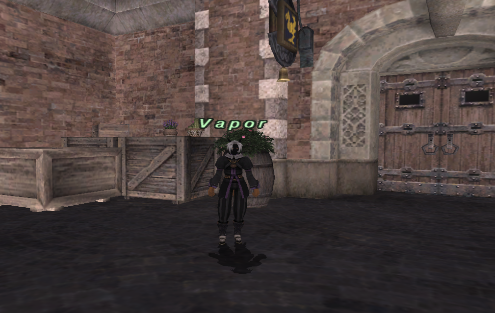

Current Reality companion guide
Vapor’s worker expeditions
Trade supplies, send out a worker, and collect the proceeds when the expedition returns—even while you are offline.
Vapor · Lower Jeuno
Find Vapor in Lower Jeuno, near Home Point #1, at X −94.000, Y −0.091, Z −178.000. Look for her beside the stacked wooden crates and flower-filled barrel, next to the large double doors shown in this photo. Plan your route to Lower Jeuno →

Vapor runs the Expedition Bureau. Trade the requested supplies to hire a fighter, fisher, gatherer, or artisan. Your worker gathers findings, sells them at fixed broker prices, and brings back gil. You receive a sales report rather than physical loot. You can have one worker per character, and offline time counts toward the trip.
Workers, supply costs and trip lengths · Menu options and messages · Findings, sale prices and example earnings
Workers and supplies
| Worker | Work and possible findings | 1-hour funding | 4-hour funding | 8-hour funding |
|---|---|---|---|---|
| Bram | Fighter Rabbit hides, sheepskins, beehive chips, ram horns | 1 Potion | 3 Potion | 6 Potion |
| Nessa | Fisher Moat carp, Bastore sardines, forest carp, gold carp | 12 Insect paste | 36 Insect paste | 72 Insect paste |
| Dorrik | Gatherer Copper, iron, silver, and gold ore | 1 Pickaxe | 3 Pickaxe | 6 Pickaxe |
| Pipiri | Artisan Copper ingots, bronze ingots, beeswax, silver ingots | 12 Earth crystal | 36 Earth crystal | 72 Earth crystal |
Actual return time is randomly fixed when dispatched: 50–60 minutes, 3h20–4h, or 6h40–8h. Offline time counts. Work and earnings stop when the worker returns; leaving a completed contract uncollected does not add more income.
- Speak to Vapor and select a named worker.
- Select the contract length. She states the exact required item and quantity.
- Within three minutes, trade exactly those supplies and nothing else. Supplies are consumed on a successful dispatch. Speak to her again to cancel a pending selection.
- Return later. Open Expedition progress or Collect / view sales to inspect the ledger.
- When the worker has returned, select Collect [amount] gil. Collect the whole payment before hiring another worker. If your gil purse is too full, make room and return; your contract remains available.
Findings and sales
Each completed ten-minute work period can produce poor, ordinary, good, or lucky findings. Longer trips provide more chances. Results are fixed for that expedition: reopening a menu or logging in again does not reroll them.
Vapor combines findings into full stacks of 12 where possible, then sells remaining singles. The displayed payment is exactly the sum of those sales. Her fixed broker prices below are separate from live Auction House listings.
| Finding | Gil per single | Gil per stack of 12 |
|---|---|---|
| Rabbit hide | 20 | 300 |
| Sheepskin | 45 | 600 |
| Beehive chip | 40 | 540 |
| Ram horn | 500 | 6600 |
| Moat carp | 25 | 360 |
| Bastore sardine | 12 | 180 |
| Forest carp | 45 | 600 |
| Gold carp | 300 | 4200 |
| Copper ore | 20 | 300 |
| Iron ore | 60 | 840 |
| Silver ore | 150 | 2100 |
| Gold ore | 400 | 5400 |
| Copper ingot | 45 | 600 |
| Bronze ingot | 40 | 540 |
| Beeswax | 90 | 1200 |
| Silver ingot | 350 | 4800 |
Early test averages for short / medium / long trips: Bram about 1,200 / 5,400 / 11,000 gil; Nessa 850 / 3,900 / 8,000; Dorrik 2,500 / 11,500 / 23,500; Pipiri 1,800 / 8,000 / 16,300. These are sample averages, not guaranteed payments. Supply costs are paid separately.
Related
Trusty-Musky’s Trust catalogue · Purchase and summon five Trusts · NPC directory